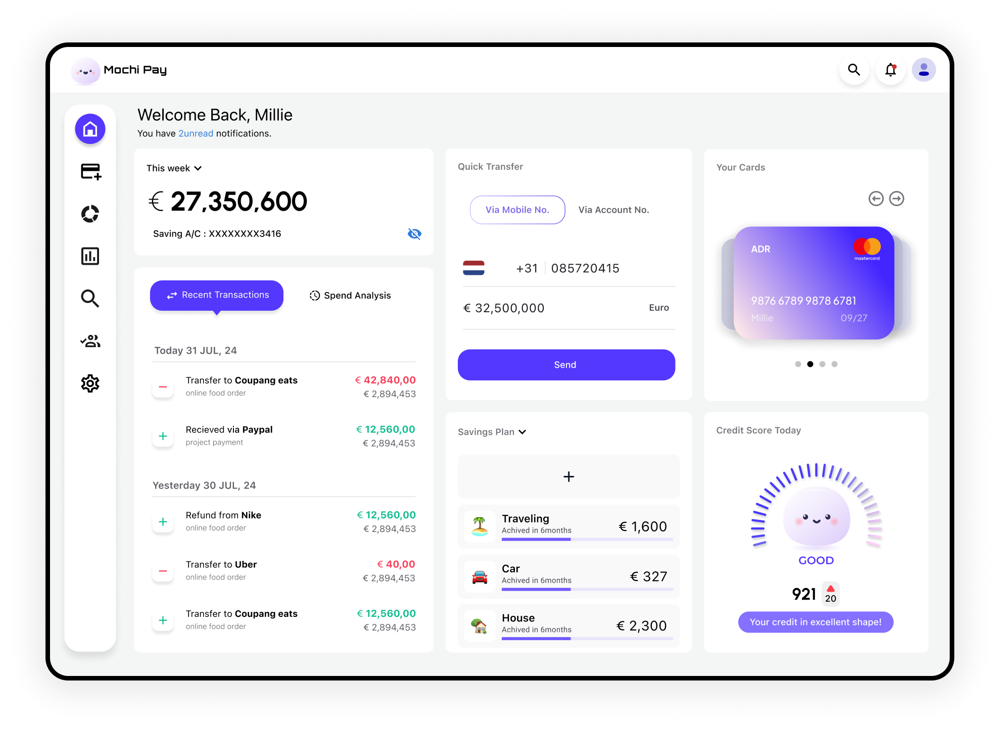
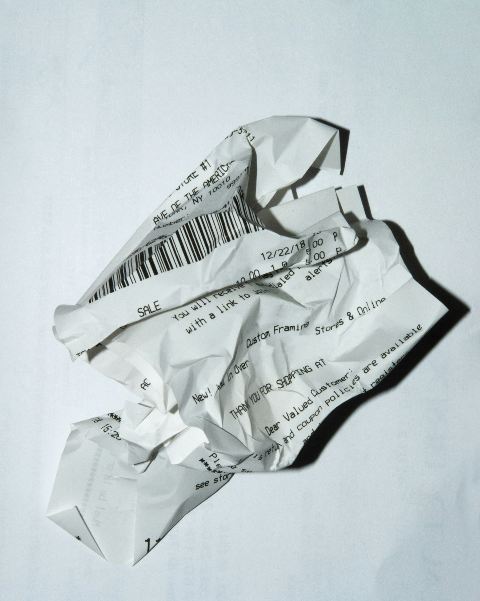
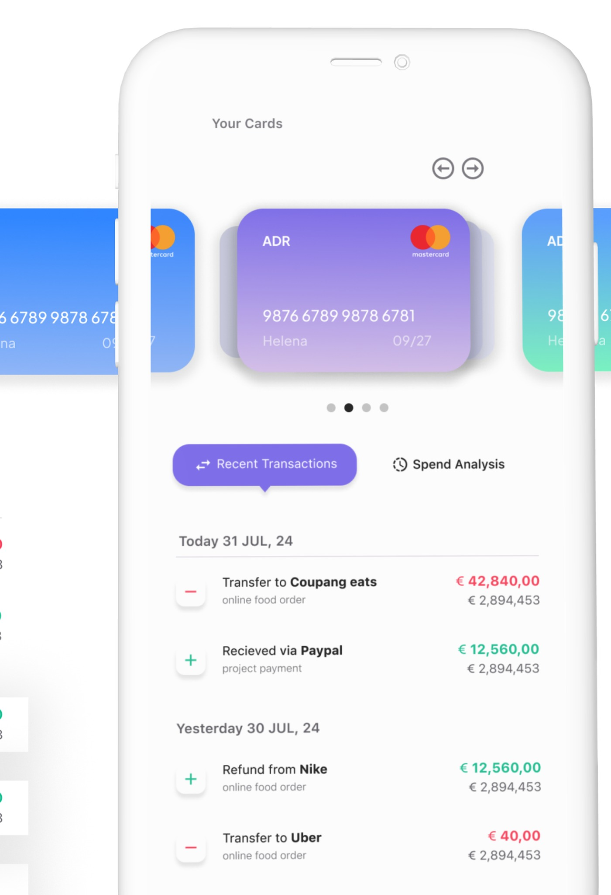
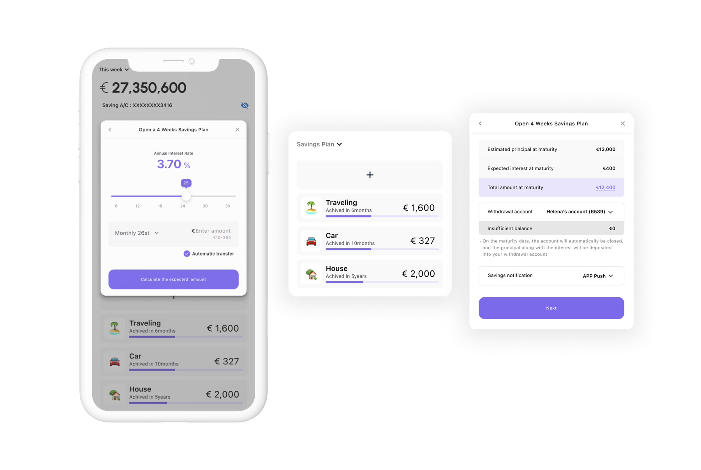

Mochi Pay I Personal Finance Dashboard
A personal finance dashboard that shows where your money goes and where it's growing, side by side.

€ 0I designed Mochi Pay end to end as a self-initiated concept, from user research to high-fidelity UI. It's a personal finance service focused on two things: tracking spending and building savings, alongside balance, transfers, and cards. The desktop dashboard brings the full picture into one view for reviewing a month of spending, while mobile screens cover what people do on the go, like checking recent transactions or opening a savings plan. Most finance apps treat spending and saving as separate jobs. I wanted to show them as two sides of the same decision.

You can't save what
you can't see.
Spending and saving lived in different places, so neither felt in control.
Most finance apps show spending as a long list of transactions and saving as a number once a month. Without seeing how today's spending connects to a goal, people lose track of both, and that gap is where most of them give up.
- Spending is just a list
Transactions pile up as a long list, so it's hard to tell where money actually goes or what to change. - Categories don't match real life
Generic categories like "dining" or "entertainment" don't match how people think about their money, so the numbers feel arbitrary. - Saving progress feels invisible
A savings balance that updates once a month gives no sense of momentum, and no link to the spending choices behind it.


How might we help people see where their money goes and feel progress toward what they're saving for?
Connect everyday spending to savings goals in one view, so each choice feels like progress instead of restriction.
Understanding why people stop tracking their money.
Before designing any screens, I interviewed people about how they actually track spending and save: not the budget they think they should follow, but the one they actually live by. Three patterns kept coming up.
Planned budgets rarely matched real life.
Preset budget categories rarely matched how people actually thought about their spending, which made the numbers feel disconnected from reality.
Small wins mattered more than big totals.
A large end goal felt abstract and far away. What kept people engaged was noticing progress on a much shorter timescale.
Shame killed consistency.
Apps that flagged "bad" spending made people disengage entirely rather than course-correct, breaking the habit instead of reinforcing it.

Three hypotheses guided the design of Mochi Pay.
I translated the research findings into three testable hypotheses that guided my design decisions before moving into wireframes and prototypes.
If spending is summarized into patterns people can scan, they'll understand where their money goes without digging through every transaction.
If savings goals sit beside balance and transactions, every check on spending will also show progress toward a goal.
If small deposits get celebrated instead of "bad" spending getting flagged, people will keep tracking instead of avoiding the app.
Design Solution
I designed Mochi Pay across desktop and mobile. The desktop dashboard shows the full picture in one view, while mobile screens cover everyday moments: checking recent spending, switching cards, and setting up a savings plan.

Spending you can read at a glance.
Recent transactions are grouped by day, with money in and out marked by color and a running balance on every line. A Spend Analysis tab sits right next to it, so users can switch from what happened to where their money is going in one tap.
All your cards, one swipe away.
Cards sit in a carousel above the transactions, so users can switch between them without leaving the screen, while the weekly balance stays visible at the top.
Goals you name, with progress you can see.
Users create savings goals in their own words, like Traveling, Car, or House, each with its own icon and progress bar. Every deposit, even a small one, triggers a brief celebration, so saving feels rewarding in the moment instead of only at the finish line.
Interaction Demo
Show the payoff before the commitment.
When opening a savings plan, users slide to choose the term and the annual interest rate updates instantly. Before confirming, a summary shows the estimated principal, expected interest, and total at maturity, so users know exactly what they'll get before they commit.

Reflection
Spending and saving are the same decision.
The hardest part of Mochi Pay wasn't the interface. It was resisting the urge to add more numbers, because the moments that mattered most were the smallest ones: seeing where a payment went, a deposit landing, a goal inching forward. Next time, I'd put the prototype in front of real users early, to test whether seeing spending and saving together actually changes how they spend.